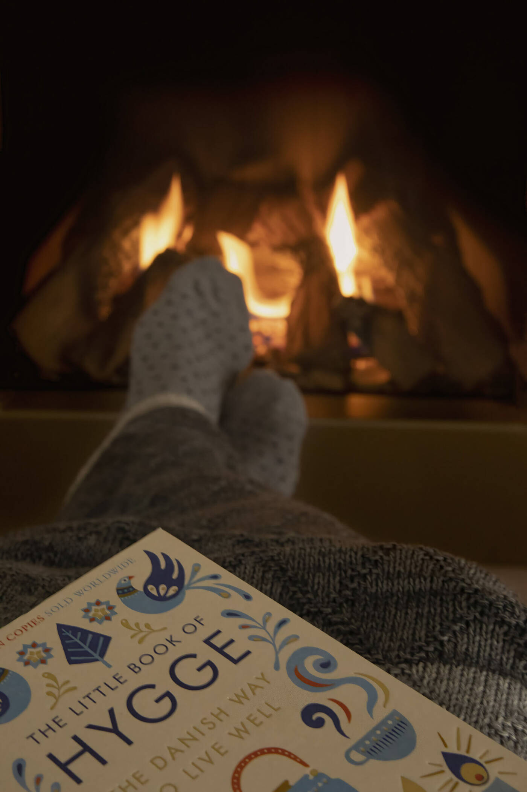
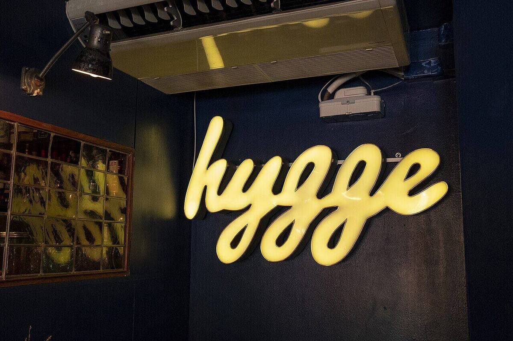
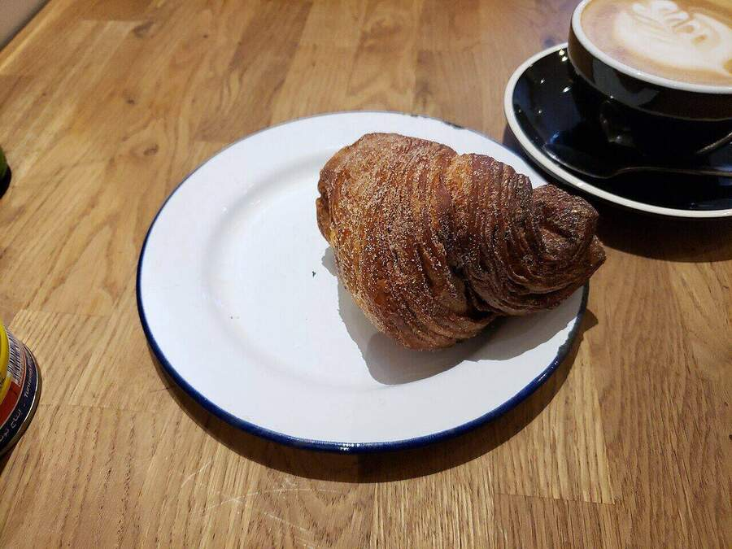
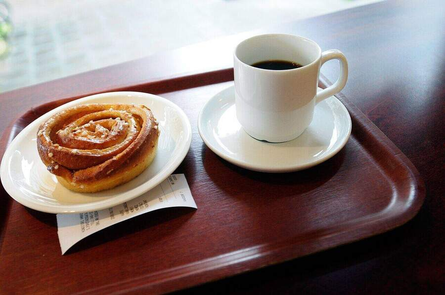
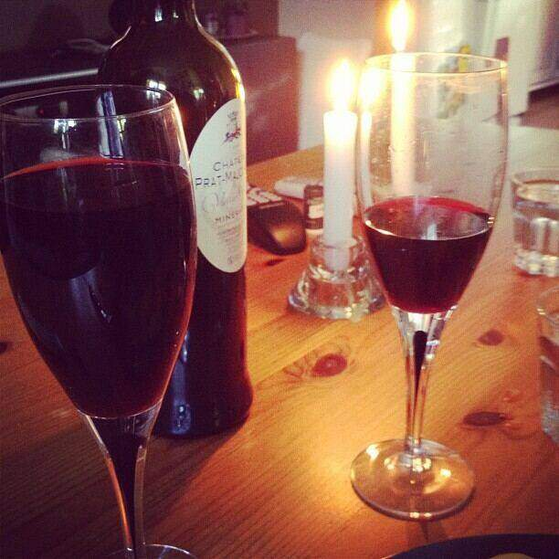
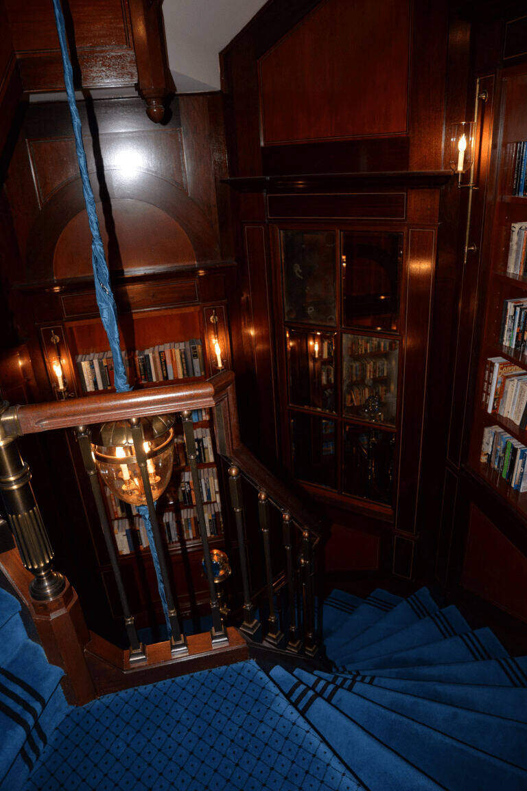
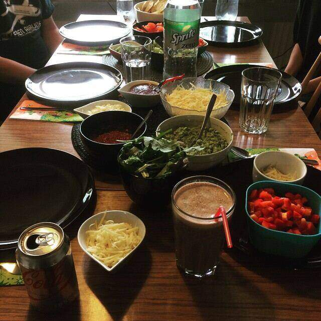

Hygge, pronounced hue-guh and generally translated as the art of cosiness. A way of life for Danes that embodies a sense of coziness, simplicity, and being present.

Two northern words for the same low light — and the quiet differences between them.
Every northern country keeps a private word for the season of long darkness — a word for blankets, for slow food, for the hour the lamps go on. In Denmark that word is hygge. In Sweden it is mys.
They look like translations of each other. They are not, quite. The differences are small, and the small differences are the whole point.
Hygge, pronounced hue-guh and generally translated as the art of cosiness. A way of life for Danes that embodies a sense of coziness, simplicity, and being present.
Mys translates to English roughly as cosiness but can also be used as a verb meaning to get comfy or cosy, to cuddle or snuggle (att mysa), or as an adjective meaning cosy (mysig).
Both came about because of the long, dark winter days in these northern latitudes. With fewer hours of sunlight, you essentially have to make your own light and warmth.
It is speculated that hygge may derive from a homograph hug, originating in the 1560s word hugge, which means "to embrace." Hugge is of unknown origin but is highly associated with an Old Norse term, hygga, "to comfort," which comes from hugr, meaning "mood." In turn, hugr is a cognate of the Old English hycgan, and comes from the Germanic hugyan, meaning, like Old Norse hyggja, "to think, consider."
Hygge first appeared in Danish writing in the 19th century and has since evolved into the cultural idea known in Denmark and Norway today.
Mys, by contrast, is a younger creature in public life. The word fredagsmys first appeared in the 1990s, entered the dictionary in 2006, and became a semi-official national anthem three years later — through, of all things, a potato-crisp commercial.
A small linguistic warning: in Swedish the Danish word Hygge ought to be "Mys." Otherwise "Hygge" in Swedish means a forest area where most of the trees have been cut down. One word, two countries, two very different feelings.

| hygge | mys | |
|---|---|---|
| Country | Denmark | Sweden |
| Part of speech | noun (also verb, adj.) | noun, verb (att mysa), adj. (mysig) |
| Pronunciation | hue-guh / hooga | mees |
| Center of gravity | the home; atmosphere; interior design | Friday night; family; the everyday |
| Signature ritual | candles, slow dinners, presence | fredagsmys — trashy TV, finger food, the couch |
| Tone | curated, restorative, slightly aspirational | ordinary, witty, inclusive |
| Export status | global lifestyle brand since ~2016 | mostly domestic; quietly Swedish |




The main difference lies in cultural interpretation and application. In Sweden, mys often extends to everyday moments and personal experiences, while in Denmark, hygge is more focused on creating a cozy environment, particularly in the home.
If hygge has a flagship — candles in a Copenhagen window — mys has one too, and it is louder and a little sillier.
Mys has become so firmly identified with Friday nights, or fredagsmys – the "Friday cosy." Fredagsmys is a collective sigh of relief that the working / school week is over, and now it is time for the whole family to come together in front of some trashy TV with a plate of easy finger-food.
The word mys can also be tacked on to the end of loads of other words. Therefore "fredagsmys" which means Friday mys is definitely a thing, as is lördagsmys (Saturday mys), julmys (Christmas mys) and my personal favourite, kvällsmys (evening mys). It's just so versatile.

"The Little Book of Hygge" became a publishing sensation and has been translated into 15 languages. It was swiftly followed by a second book from its author, "My Hygge Home," one of dozens on the market.
Meik Wiking, the author of The Little Book of Hygge, created the Hygge Manifesto, which quantifies hygge into ten ideals: atmosphere, presence, pleasure, equality, gratitude, comfort, togetherness, harmony…
Hygge is also associated with contemporary interior design, particularly in Scandinavian-inspired homes, where it emphasizes comfort, simplicity, and the use of natural materials and soft lighting. Such interiors typically feature neutral colour palettes, uncluttered layouts, and a focus on everyday comfort and usability.
Hygge is the framed photograph of cosiness — staged, lit, perfected, then exported. Mys is the snapshot somebody took on the way to the couch.
Both are real. Both are answers to the same northern question: what do we do with all this darkness?
One country answered with candles. The other answered with crisps.